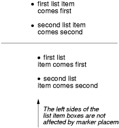

Contents
In some cases, authors may want user agents to render content that does not come from the document tree. One familiar example of this is a numbered list; the author does not want to list the numbers explicitly, he or she wants the user agent to generate them automatically. Similarly, authors may want the user agent to insert the word "Figure" before the caption of a figure, or "Chapter 7" before the seventh chapter title. For audio or braille in particular, user agents should be able to insert these strings.
In CSS 2.1, content may be generated by two mechanisms:
Authors specify the style and location of generated content with the :before and :after pseudo-elements. As their names indicate, the :before and :after pseudo-elements specify the location of content before and after an element's document tree content. The 'content' property, in conjunction with these pseudo-elements, specifies what is inserted.
For example, the following rule inserts the string "Note: " before the content of every P element whose "class" attribute has the value "note":
p.note:before { content: "Note: " }
The formatting objects (e.g., boxes) generated by an element include generated content. So, for example, changing the above style sheet to:
p.note:before { content: "Note: " }
p.note { border: solid green }
would cause a solid green border to be rendered around the entire paragraph, including the initial string.
The :before and :after pseudo-elements inherit any inheritable properties from the element in the document tree to which they are attached.
For example, the following rules insert an open quote mark before every Q element. The color of the quote mark will be red, but the font will be the same as the font of the rest of the Q element:
q:before {
content: open-quote;
color: red
}
In a :before or :after pseudo-element declaration, non-inherited properties take their initial values.
So, for example, because the initial value of the 'display' property is 'inline', the quote in the previous example is inserted as an inline box (i.e., on the same line as the element's initial text content). The next example explicitly sets the 'display' property to 'block', so that the inserted text becomes a block:
body:after {
content: "The End";
display: block;
margin-top: 2em;
text-align: center;
}
The :before and :after pseudo-elements interact with other boxes, such as run-in boxes, as if they were real elements inserted just inside their associated element.
For example, the following document fragment and style sheet:
<h2> Header </h2> h2 { display: run-in; }
<p> Text </p> p:before { display: block; content: 'Some'; }
...would render in exactly the same way as the following document fragment and style sheet:
<h2> Header </h2> h2 { display: run-in; }
<p><span>Some</span> Text </p> span { display: block }
Similarly, the following document fragment and style sheet:
<h2> Header </h2> h2 { display: run-in; }
h2:after { display: block; content: 'Thing'; }
<p> Text </p>
...would render in exactly the same way as the following document fragment and style sheet:
<h2> Header <span>Thing</span></h2> h2 { display: block; }
span { display: block; }
<p> Text </p>
Note. This specification does not fully define the interaction of :before and :after with replaced elements (such as IMG in HTML). This will be defined in more detail in a future specification.
| Value: | normal | none | [ <string> | <uri> | <counter> | attr(<identifier>) | open-quote | close-quote | no-open-quote | no-close-quote ]+ | inherit |
| Initial: | normal |
| Applies to: | :before and :after pseudo-elements |
| Inherited: | no |
| Percentages: | N/A |
| Media: | all |
| Computed value: | On elements, always computes to 'normal'. On :before and :after, if 'normal' is specified, computes to 'none'. Otherwise, for URI values, the absolute URI; for attr() values, the resulting string; for other keywords, as specified. |
This property is used with the :before and :after pseudo-elements to generate content in a document. Values have the following meanings:
The 'display' property controls whether the content is placed in a block or inline box.
The following rule causes the string "Chapter: " to be generated before each H1 element:
H1:before {
content: "Chapter: ";
display: inline;
}
Authors may include newlines in the generated content by writing the "\A" escape sequence in one of the strings after the 'content' property. This inserted line break is still subject to the 'white-space' property. See "Strings" and "Characters and case" for more information on the "\A" escape sequence.
h1:before {
display: block;
text-align: center;
white-space: pre;
content: "chapter\A hoofdstuk\A chapitre"
}
Generated content does not alter the document tree. In particular, it is not fed back to the document language processor (e.g., for reparsing).
In CSS 2.1, authors may specify, in a style-sensitive and context-dependent manner, how user agents should render quotation marks. The 'quotes' property specifies pairs of quotation marks for each level of embedded quotation. The 'content' property gives access to those quotation marks and causes them to be inserted before and after a quotation.
This property specifies quotation marks for any number of embedded quotations. Values have the following meanings:
For example, applying the following style sheet:
/* Specify pairs of quotes for two levels in two languages */
q:lang(en) { quotes: '"' '"' "'" "'" }
q:lang(no) { quotes: "«" "»" '"' '"' }
/* Insert quotes before and after Q element content */
q:before { content: open-quote }
q:after { content: close-quote }
to the following HTML fragment:
<HTML lang="en">
<HEAD>
<TITLE>Quotes</TITLE>
</HEAD>
<BODY>
<P><Q>Quote me!</Q>
</BODY>
</HTML>
would allow a user agent to produce:
"Quote me!"
while this HTML fragment:
<HTML lang="no">
<HEAD>
<TITLE>Quotes</TITLE>
</HEAD>
<BODY>
<P><Q>Trøndere gråter når <Q>Vinsjan på kaia</Q> blir deklamert.</Q>
</BODY>
</HTML>
would produce:
«Trøndere gråter når "Vinsjan på kaia" blir deklamert.»
Note. While the quotation marks specified by 'quotes' in the previous examples are conveniently located on computer keyboards, high quality typesetting would require different ISO 10646 characters. The following informative table lists some of the ISO 10646 quotation mark characters:
| Character | Approximate rendering | ISO 10646 code (hex) | Description |
|---|---|---|---|
| " | " | 0022 | QUOTATION MARK [the ASCII double quotation mark] |
| ' | ' | 0027 | APOSTROPHE [the ASCII single quotation mark] |
| ‹ | < | 2039 | SINGLE LEFT-POINTING ANGLE QUOTATION MARK |
| › | > | 203A | SINGLE RIGHT-POINTING ANGLE QUOTATION MARK |
| « | « | 00AB | LEFT-POINTING DOUBLE ANGLE QUOTATION MARK |
| » | » | 00BB | RIGHT-POINTING DOUBLE ANGLE QUOTATION MARK |
| ‘ | ` | 2018 | LEFT SINGLE QUOTATION MARK [single high-6] |
| ’ | ' | 2019 | RIGHT SINGLE QUOTATION MARK [single high-9] |
| “ | `` | 201C | LEFT DOUBLE QUOTATION MARK [double high-6] |
| ” | '' | 201D | RIGHT DOUBLE QUOTATION MARK [double high-9] |
| „ | ,, | 201E | DOUBLE LOW-9 QUOTATION MARK [double low-9] |
Quotation marks are inserted in appropriate places in a document with the 'open-quote' and 'close-quote' values of the 'content' property. Each occurrence of 'open-quote' or 'close-quote' is replaced by one of the strings from the value of 'quotes', based on the depth of nesting.
'Open-quote' refers to the first of a pair of quotes, 'close-quote' refers to the second. Which pair of quotes is used depends on the nesting level of quotes: the number of occurrences of 'open-quote' in all generated text before the current occurrence, minus the number of occurrences of 'close-quote'. If the depth is 0, the first pair is used, if the depth is 1, the second pair is used, etc. If the depth is greater than the number of pairs, the last pair is repeated. A 'close-quote' or 'no-close-quote' that would make the depth negative is in error and is ignored (at rendering time): the depth stays at 0 and no quote mark is rendered (although the rest of the 'content' property's value is still inserted).
Note. The quoting depth is independent of the nesting of the source document or the formatting structure.
Some typographic styles require open quotation marks to be repeated before every paragraph of a quote spanning several paragraphs, but only the last paragraph ends with a closing quotation mark. In CSS, this can be achieved by inserting "phantom" closing quotes. The keyword 'no-close-quote' decrements the quoting level, but does not insert a quotation mark.
The following style sheet puts opening quotation marks on every paragraph in a BLOCKQUOTE, and inserts a single closing quote at the end:
blockquote p:before { content: open-quote }
blockquote p:after { content: no-close-quote }
blockquote p.last:after { content: close-quote }
This relies on the last paragraph being marked with a class "last".
For symmetry, there is also a 'no-open-quote' keyword, which inserts nothing, but increments the quotation depth by one.
Automatic numbering in CSS 2.1 is controlled with two properties, 'counter-increment' and 'counter-reset'. The counters defined by these properties are used with the counter() and counters() functions of the the 'content' property.
| Value: | [ <identifier> <integer>? ]+ | none | inherit |
| Initial: | none |
| Applies to: | all elements |
| Inherited: | no |
| Percentages: | N/A |
| Media: | all |
| Computed value: | as specified |
| Value: | [ <identifier> <integer>? ]+ | none | inherit |
| Initial: | none |
| Applies to: | all elements |
| Inherited: | no |
| Percentages: | N/A |
| Media: | all |
| Computed value: | as specified |
The 'counter-increment' property accepts one or more names of counters (identifiers), each one optionally followed by an integer. The integer indicates by how much the counter is incremented for every occurrence of the element. The default increment is 1. Zero and negative integers are allowed.
The 'counter-reset' property also contains a list of one or more names of counters, each one optionally followed by an integer. The integer gives the value that the counter is set to on each occurrence of the element. The default is 0.
The keywords 'none', 'inherit' and 'initial' must not be used as counter names. A value of 'none' on its own means no counters are reset, resp. incremented. 'Inherit' on its own has its usual meaning (see 6.2.1). 'Initial' is reserved for future use.
This example shows a way to number chapters and sections with "Chapter 1", "1.1", "1.2", etc.
BODY {
counter-reset: chapter; /* Create a chapter counter scope */
}
H1:before {
content: "Chapter " counter(chapter) ". ";
counter-increment: chapter; /* Add 1 to chapter */
}
H1 {
counter-reset: section; /* Set section to 0 */
}
H2:before {
content: counter(chapter) "." counter(section) " ";
counter-increment: section;
}
If an element increments/resets a counter and also uses it (in the 'content' property of its :before or :after pseudo-element), the counter is used after being incremented/reset.
If an element both resets and increments a counter, the counter is reset first and then incremented.
If the same counter is specified more than once in the value of the 'counter-reset' and 'counter-increment' properties, each reset/increment of the counter is processed in the order specified.
The following example will reset the 'section' counter to 0:
H1 { counter-reset: section 2 section }
The following example will increment the 'chapter' counter by 3:
H1 { counter-increment: chapter chapter 2 }
The 'counter-reset' property follows the cascading rules. Thus, due to cascading, the following style sheet:
H1 { counter-reset: section -1 }
H1 { counter-reset: imagenum 99 }
will only reset 'imagenum'. To reset both counters, they have to be specified together:
H1 { counter-reset: section -1 imagenum 99 }
Counters are "self-nesting", in the sense that resetting a counter in a descendant element or pseudo-element automatically creates a new instance of the counter. This is important for situations like lists in HTML, where elements can be nested inside themselves to arbitrary depth. It would be impossible to define uniquely named counters for each level.
Thus, the following suffices to number nested list items. The result is very similar to that of setting 'display:list-item' and 'list-style: inside' on the LI element:
OL { counter-reset: item }
LI { display: block }
LI:before { content: counter(item) ". "; counter-increment: item }
The scope of a counter starts at the first element in the document that has a 'counter-reset' for that counter and includes the element's descendants and its following siblings with their descendants. However, it does not include any elements in the scope of a counter with the same name created by a 'counter-reset' on a later sibling of the element or by a later 'counter-reset' on the same element.
If 'counter-increment' or 'content' on an element or pseudo-element refers to a counter that is not in the scope of any 'counter-reset', implementations should behave as though a 'counter-reset' had reset the counter to 0 on that element or pseudo-element.
In the example above, an OL will create a counter, and all children of the OL will refer to that counter.
If we denote by item[n] the nth instance of the "item" counter, and by "{" and "}" the beginning and end of a scope, then the following HTML fragment will use the indicated counters. (We assume the style sheet as given in the example above).
<OL> <!-- {item[0]=0 -->
<LI>item</LI> <!-- item[0]++ (=1) -->
<LI>item <!-- item[0]++ (=2) -->
<OL> <!-- {item[1]=0 -->
<LI>item</LI> <!-- item[1]++ (=1) -->
<LI>item</LI> <!-- item[1]++ (=2) -->
<LI>item <!-- item[1]++ (=3) -->
<OL> <!-- {item[2]=0 -->
<LI>item</LI> <!-- item[2]++ (=1) -->
</OL> <!-- -->
<OL> <!-- }{item[2]=0 -->
<LI>item</LI> <!-- item[2]++ (=1) -->
</OL> <!-- -->
</LI> <!-- } -->
<LI>item</LI> <!-- item[1]++ (=4) -->
</OL> <!-- -->
</LI> <!-- } -->
<LI>item</LI> <!-- item[0]++ (=3) -->
<LI>item</LI> <!-- item[0]++ (=4) -->
</OL> <!-- -->
<OL> <!-- }{item[0]=0 -->
<LI>item</LI> <!-- item[0]++ (=1) -->
<LI>item</LI> <!-- item[0]++ (=2) -->
</OL> <!-- -->
Another example, showing how scope works when counters are used on elements that are not nested, is the following. This shows how the style rules given above to number chapters and sections would apply to the markup given.
<!--"chapter" counter|"section" counter -->
<body> <!-- {chapter=0 | -->
<h1>About CSS</h1> <!-- chapter++ (=1) | {section=0 -->
<h2>CSS 2</h2> <!-- | section++ (=1) -->
<h2>CSS 2.1</h2> <!-- | section++ (=2) -->
<h1>Style</h1> <!-- chapter++ (=2) |}{ section=0 -->
</body> <!-- | } -->
The 'counters()' function generates a string composed of all of the counters with the same name that are in scope, separated by a given string.
The following style sheet numbers nested list items as "1", "1.1", "1.1.1", etc.
OL { counter-reset: item }
LI { display: block }
LI:before { content: counters(item, ".") " "; counter-increment: item }
By default, counters are formatted with decimal numbers, but all the styles available for the 'list-style-type' property are also available for counters. The notation is:
counter(name)
for the default style, or:
counter(name, <'list-style-type'>)
All the styles are allowed, including 'disc', 'circle', 'square', and 'none'.
H1:before { content: counter(chno, upper-latin) ". " }
H2:before { content: counter(section, upper-roman) " - " }
BLOCKQUOTE:after { content: " [" counter(bq, lower-greek) "]" }
DIV.note:before { content: counter(notecntr, disc) " " }
P:before { content: counter(p, none) }
An element that is not displayed ('display' set to 'none') cannot increment or reset a counter.
For example, with the following style sheet, H2s with class "secret" do not increment 'count2'.
H2.secret {counter-increment: count2; display: none}
Pseudo-elements that are not generated also cannot increment or reset a counter.
For example, the following does not increment 'heading':
h1::before {
content: normal;
counter-increment: heading;
}
Elements with 'visibility' set to 'hidden', on the other hand, do increment counters.
CSS 2.1 offers basic visual formatting of lists. An element with 'display: list-item' generates a principal box for the element's content and, depending on the values of 'list-style-type' and 'list-style-image', possibly also a marker box as a visual indication that the element is a list item.
The list properties describe basic visual formatting of lists: they allow style sheets to specify the marker type (image, glyph, or number), and the marker position with respect to the principal box (outside it or within it before content). They do not allow authors to specify distinct style (colors, fonts, alignment, etc.) for the list marker or adjust its position with respect to the principal box; these may be derived from the principal box.
The background properties apply to the principal box only; an 'outside' marker box is transparent.
| Value: | disc | circle | square | decimal | decimal-leading-zero | lower-roman | upper-roman | lower-greek | lower-latin | upper-latin | armenian | georgian | lower-alpha | upper-alpha | none | inherit |
| Initial: | disc |
| Applies to: | elements with 'display: list-item' |
| Inherited: | yes |
| Percentages: | N/A |
| Media: | visual |
| Computed value: | as specified |
This property specifies appearance of the list item marker if 'list-style-image' has the value 'none' or if the image pointed to by the URI cannot be displayed. The value 'none' specifies no marker, otherwise there are three types of marker: glyphs, numbering systems, and alphabetic systems.
Glyphs are specified with disc, circle, and square. Their exact rendering depends on the user agent.
Numbering systems are specified with:
Alphabetic systems are specified with:
This specification does not define how alphabetic systems wrap at the end of the alphabet. For instance, after 26 list items, 'lower-latin' rendering is undefined. Therefore, for long lists, we recommend that authors specify true numbers.
For example, the following HTML document:
<!DOCTYPE HTML PUBLIC "-//W3C//DTD HTML 4.01//EN">
<HTML>
<HEAD>
<TITLE>Lowercase latin numbering</TITLE>
<STYLE type="text/css">
ol { list-style-type: lower-roman }
</STYLE>
</HEAD>
<BODY>
<OL>
<LI> This is the first item.
<LI> This is the second item.
<LI> This is the third item.
</OL>
</BODY>
</HTML>
might produce something like this:
i This is the first item. ii This is the second item. iii This is the third item.
The list marker alignment (here, right justified) depends on the user agent.
| Value: | <uri> | none | inherit |
| Initial: | none |
| Applies to: | elements with 'display: list-item' |
| Inherited: | yes |
| Percentages: | N/A |
| Media: | visual |
| Computed value: | absolute URI or 'none' |
This property sets the image that will be used as the list item marker. When the image is available, it will replace the marker set with the 'list-style-type' marker.
The size of the image is calculated from the following rules:
The following example sets the marker at the beginning of each list item to be the image "ellipse.png".
ul { list-style-image: url("http://png.com/ellipse.png") }
| Value: | inside | outside | inherit |
| Initial: | outside |
| Applies to: | elements with 'display: list-item' |
| Inherited: | yes |
| Percentages: | N/A |
| Media: | visual |
| Computed value: | as specified |
This property specifies the position of the marker box with respect to the principal block box. Values have the following meanings:
For example:
<HTML>
<HEAD>
<TITLE>Comparison of inside/outside position</TITLE>
<STYLE type="text/css">
ul { list-style: outside }
ul.compact { list-style: inside }
</STYLE>
</HEAD>
<BODY>
<UL>
<LI>first list item comes first
<LI>second list item comes second
</UL>
<UL class="compact">
<LI>first list item comes first
<LI>second list item comes second
</UL>
</BODY>
</HTML>
The above example may be formatted as:
 [D]
In right-to-left text, the markers would have been on the right side of the box.
| Value: | [ <'list-style-type'> || <'list-style-position'> || <'list-style-image'> ] | inherit |
| Initial: | see individual properties |
| Applies to: | elements with 'display: list-item' |
| Inherited: | yes |
| Percentages: | N/A |
| Media: | visual |
| Computed value: | see individual properties |
The 'list-style' property is a shorthand notation for setting the three properties 'list-style-type', 'list-style-image', and 'list-style-position' at the same place in the style sheet.
ul { list-style: upper-roman inside } /* Any "ul" element */
ul > li > ul { list-style: circle outside } /* Any "ul" child
of an "li" child
of a "ul" element */
Although authors may specify 'list-style' information directly on list item elements (e.g., "li" in HTML), they should do so with care. The following rules look similar, but the first declares a descendant selector and the second a (more specific) child selector.
ol.alpha li { list-style: lower-alpha } /* Any "li" descendant of an "ol" */
ol.alpha > li { list-style: lower-alpha } /* Any "li" child of an "ol" */
Authors who use only the descendant selector may not achieve the results they expect. Consider the following rules:
<HTML>
<HEAD>
<TITLE>WARNING: Unexpected results due to cascade</TITLE>
<STYLE type="text/css">
ol.alpha li { list-style: lower-alpha }
ul li { list-style: disc }
</STYLE>
</HEAD>
<BODY>
<OL class="alpha">
<LI>level 1
<UL>
<LI>level 2
</UL>
</OL>
</BODY>
</HTML>
The desired rendering would have level 1 list items with 'lower-alpha' labels and level 2 items with 'disc' labels. However, the cascading order will cause the first style rule (which includes specific class information) to mask the second. The following rules solve the problem by employing a child selector instead:
ol.alpha > li { list-style: lower-alpha }
ul li { list-style: disc }
Another solution would be to specify 'list-style' information only on the list type elements:
ol.alpha { list-style: lower-alpha }
ul { list-style: disc }
Inheritance will transfer the 'list-style' values from OL and UL elements to LI elements. This is the recommended way to specify list style information.
A URI value may be combined with any other value, as in:
ul { list-style: url("http://png.com/ellipse.png") disc }
In the example above, the 'disc' will be used when the image is unavailable.
A value of 'none' within the 'list-style' property sets whichever of 'list-style-type' and 'list-style-image' are not otherwise specified to 'none'. However, if both are otherwise specified, the declaration is in error (and thus ignored).
For example, a value of 'none' for the 'list-style' property sets both 'list-style-type' and 'list-style-image' to 'none':
ul { list-style: none }
The result is that no list-item marker is displayed.